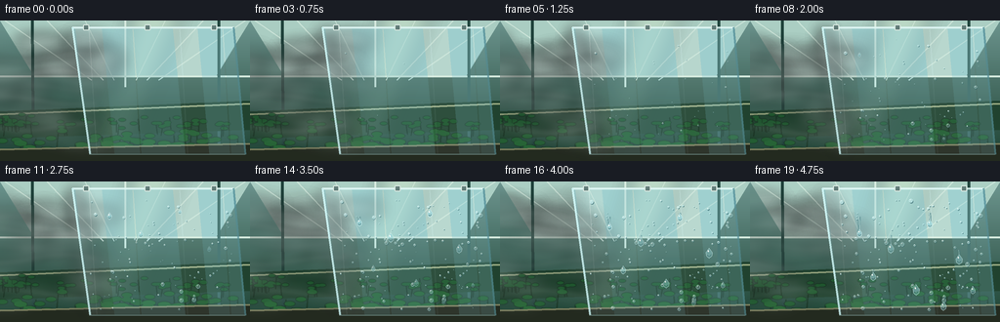
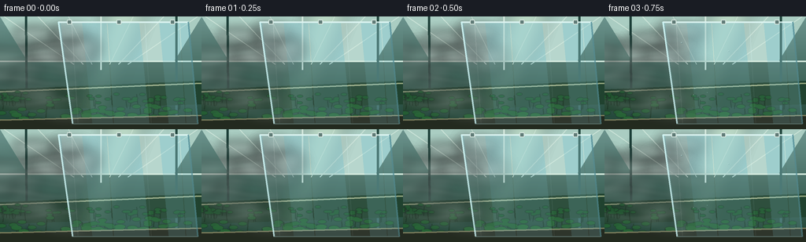
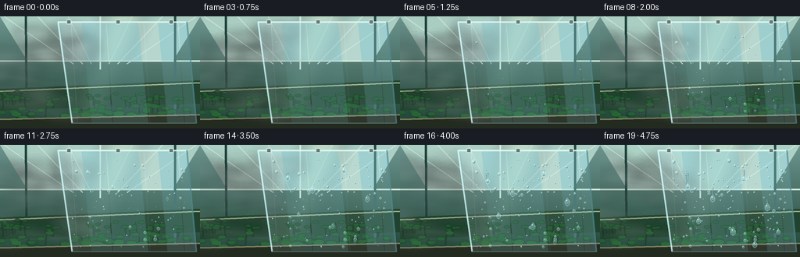
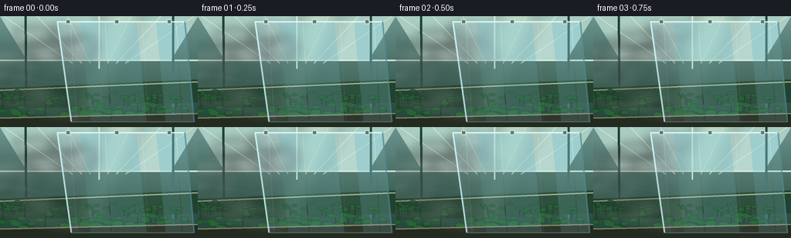

CODING AGENTS AS PIXEL WORLD MODELS
traex/GPT-5.6-Sol · phygen_104
点击播放 · 原生 RGB 像素
逐轮保存的候选
回放视频、检查图与代码变化。
每份候选均可单独播放。实际图片检查记录在下方工具轨迹中。
候选 01播放与检查图
点击播放 · 原生 RGB 像素

展开代码变化
--- 上一保存版本
+++ 本次保存版本
@@ -0,0 +1,193 @@
+from pathlib import Path
+import math
+import numpy as np
+from PIL import Image, ImageDraw, ImageFilter
+import artifact_io
+
+W,H,N,S = 256,144,20,3
+WW,HH = W*S,H*S
+rng=np.random.default_rng(104)
+
+def sc(v): return int(round(v*S))
+def pts(seq): return [(sc(x),sc(y)) for x,y in seq]
+
+def rgba_layer(): return Image.new('RGBA',(WW,HH),(0,0,0,0))
+
+def composite(im, layer): return Image.alpha_composite(im,layer)
+
+def soft_ellipse(layer, box, color, blur=0):
+ q=rgba_layer(); d=ImageDraw.Draw(q); d.ellipse(tuple(sc(v) for v in box), fill=color)
+ if blur: q=q.filter(ImageFilter.GaussianBlur(sc(blur)))
+ return Image.alpha_composite(layer,q)
+
+# Persistent condensation seeds, laid over the cool film.
+drops=[]
+for i in range(145):
+ # x range follows slanted sheet boundaries; favor tiny nucleation beads
+ x=float(rng.uniform(91,239)); y=float(rng.uniform(16,132))
+ left=75 + 0.13*y
+ if x < left+3: x=left+float(rng.uniform(3,22))
+ onset=float(rng.uniform(.05,.77)) + .12*((x-left)/150)
+ r=float(rng.choice([rng.uniform(.35,.75),rng.uniform(.75,1.35),rng.uniform(1.35,2.2)],p=[.57,.31,.12]))
+ drops.append((x,y,onset,r))
+# Designed coalescing drops/rivulets
+big=[(112,35,.35,3.2),(144,54,.43,4.0),(184,31,.48,3.4),(214,69,.52,4.3),
+ (126,89,.58,3.6),(170,104,.61,4.4),(228,106,.65,3.2),(198,124,.69,3.8)]
+
+def background():
+ a=np.zeros((HH,WW,4),dtype=np.uint8)
+ yy=np.linspace(0,1,HH)[:,None]
+ # humid, luminous greenhouse interior
+ top=np.array([108,148,142]); bot=np.array([29,65,50])
+ rgb=(top[None,None,:]*(1-yy[:,:,None])+bot[None,None,:]*yy[:,:,None])
+ a[:,:,:3]=np.repeat(rgb,WW,axis=1).astype(np.uint8); a[:,:,3]=255
+ im=Image.fromarray(a,'RGBA')
+ d=ImageDraw.Draw(im,'RGBA')
+ # frosted roof panes and perspective architecture
+ d.polygon(pts([(0,0),(256,0),(221,57),(35,57)]),fill=(170,205,194,45))
+ d.line(pts([(128,0),(128,68)]),fill=(222,242,231,105),width=sc(2))
+ for x in [5,48,87,169,208,251]:
+ tx=128+(x-128)*.28
+ d.line(pts([(x,0),(tx,61)]),fill=(202,227,215,78),width=sc(1))
+ d.line(pts([(0,57),(256,57)]),fill=(211,232,219,90),width=sc(2))
+ d.line(pts([(33,0),(34,144)]),fill=(31,66,59,110),width=sc(3))
+ d.line(pts([(224,0),(224,144)]),fill=(35,71,63,100),width=sc(3))
+ # distant greenhouse rows / tables
+ d.polygon(pts([(0,93),(256,82),(256,112),(0,121)]),fill=(32,66,47,180))
+ d.line(pts([(0,96),(256,85)]),fill=(149,166,127,100),width=sc(2))
+ # sunlight shafts
+ light=rgba_layer(); ld=ImageDraw.Draw(light)
+ ld.polygon(pts([(135,0),(184,0),(128,144),(88,144)]),fill=(219,238,203,20))
+ light=light.filter(ImageFilter.GaussianBlur(sc(10))); im=composite(im,light)
+ # plants: rows of layered leaves
+ plant=rgba_layer(); pd=ImageDraw.Draw(plant,'RGBA')
+ prng=np.random.default_rng(77)
+ for row,(base,n,scale) in enumerate([(108,25,.75),(128,22,1.1),(141,18,1.35)]):
+ for i in range(n):
+ x=float(prng.uniform(-5,261)); y=base+float(prng.uniform(-5,5));
+ stem=(23,58,31,180)
+ pd.line(pts([(x,y+9*scale),(x+prng.uniform(-2,2),y-7*scale)]),fill=stem,width=max(1,sc(scale)))
+ for side in [-1,1]:
+ lx=x+side*float(prng.uniform(3,8))*scale; ly=y-float(prng.uniform(0,10))*scale
+ box=(sc(lx-5*scale),sc(ly-2.2*scale),sc(lx+5*scale),sc(ly+2.2*scale))
+ col=(30+row*4,88+row*8,46+row*3,220)
+ pd.ellipse(box,fill=col)
+
+ plant=plant.filter(ImageFilter.GaussianBlur(sc(.35 if row else .6)))
+ im=composite(im,plant)
+ # foreground planter lip
+ d=ImageDraw.Draw(im,'RGBA'); d.polygon(pts([(0,132),(256,126),(256,144),(0,144)]),fill=(35,42,31,230))
+ d.line(pts([(0,132),(256,126)]),fill=(121,124,92,160),width=sc(2))
+ return im
+
+BASE=background()
+
+def mist_layer(t):
+ # t in [0,1]. Dense visible plume moves into and banks against sheet.
+ lay=rgba_layer()
+ # mist is strongest around initial/middle contact, remaining humid later
+ strength=1.0-.30*t
+ # broad cloud parcels advect rightward, with smooth turbulent oscillation
+ for j in range(22):
+ phase=(j*0.137 + t*.72)%1.0
+ x=-15 + phase*125
+ y=28 + (j%6)*15 + 8*math.sin(j*1.71+t*5.2)
+ rx=20+8*math.sin(j*2.2)**2; ry=6+3*(j%3)
+ alpha=int((18+12*(j%4))*strength)
+ q=rgba_layer(); qd=ImageDraw.Draw(q)
+ qd.ellipse((sc(x-rx),sc(y-ry),sc(x+rx),sc(y+ry)),fill=(220,239,232,alpha))
+ q=q.filter(ImageFilter.GaussianBlur(sc(5+ry*.35)))
+ lay=composite(lay,q)
+ # coherent curling streamlines, suggesting flow toward cold sheet
+ q=rgba_layer(); qd=ImageDraw.Draw(q,'RGBA')
+ for k in range(6):
+ y=37+k*15+4*math.sin(t*4+k)
+ line=[]
+ for u in np.linspace(0,1,40):
+ x=-12+112*u
+ yy=y+5*math.sin(u*5.3+k*1.2-t*4.5)*(1-u*.4)
+ line.append((sc(x),sc(yy)))
+ qd.line(line,fill=(235,247,242,int(32*strength)),width=sc(3+k%2))
+ q=q.filter(ImageFilter.GaussianBlur(sc(3))); lay=composite(lay,q)
+ # narrow impact veil hugging the cold film's left boundary
+ impact=math.sin(math.pi*min(1,t*1.2))*.75+.2
+ q=rgba_layer(); qd=ImageDraw.Draw(q)
+ qd.line(pts([(76,11),(80,42),(86,77),(92,112),(95,137)]),fill=(228,247,243,int(60*impact)),width=sc(9))
+ q=q.filter(ImageFilter.GaussianBlur(sc(7))); lay=composite(lay,q)
+ return lay
+
+def draw_sheet(im,t):
+ poly=[(74,7),(239,7),(251,137),(92,137)]
+ # cool transparent plastic sheet tint
+ film=rgba_layer(); fd=ImageDraw.Draw(film,'RGBA')
+ fd.polygon(pts(poly),fill=(148,207,214,47))
+ # cool blue surface gradient strips and plastic wrinkles
+ fd.polygon(pts([(77,8),(104,8),(117,137),(94,137)]),fill=(192,232,234,25))
+ fd.polygon(pts([(177,8),(202,8),(214,137),(190,137)]),fill=(224,245,243,13))
+ for x,a in [(91,35),(136,18),(184,24),(228,20)]:
+ fd.line(pts([(x,9),(x+8,136)]),fill=(224,250,250,a),width=sc(1))
+ # hard top seam and side edge make the material legible
+ fd.line(pts([(74,7),(239,7)]),fill=(222,246,244,175),width=sc(2))
+ fd.line(pts([(74,7),(92,137)]),fill=(205,244,244,210),width=sc(2))
+ fd.line(pts([(239,7),(251,137)]),fill=(89,148,158,145),width=sc(2))
+ fd.line(pts([(92,137),(251,137)]),fill=(173,217,216,100),width=sc(1))
+ # small clips on overhead rail
+ for x in [88,151,219]:
+ fd.rounded_rectangle((sc(x-3),sc(4),sc(x+3),sc(10)),radius=sc(1),fill=(94,121,117,220),outline=(218,233,226,210),width=sc(1))
+ im=composite(im,film)
+ # Condensation pass
+ dew=rgba_layer(); dd=ImageDraw.Draw(dew,'RGBA')
+ p=t
+ for x,y,onset,r0 in drops:
+ g=np.clip((p-onset)/.25,0,1)
+ if g<=0: continue
+ r=r0*(.25+.75*g)
+ # acceleration downward for mature, heavier beads
+ yy=y + max(0,p-onset-.34)**2 * (7 if r0>1.1 else 2)
+ # subtle lower-right shadow and dark lens rim
+ dd.ellipse((sc(x-r*.9+.55),sc(yy-r*.75+.65),sc(x+r*.9+.55),sc(yy+r*1.05+.65)),fill=(45,98,105,int(50+45*g)))
+ dd.ellipse((sc(x-r*.9),sc(yy-r*.9),sc(x+r*.9),sc(yy+r*1.0)),fill=(190,233,235,int(32+30*g)),outline=(212,247,246,int(85+80*g)),width=max(1,sc(.35)))
+ if r>.65:
+ hr=max(.28,r*.23)
+ dd.ellipse((sc(x-r*.40),sc(yy-r*.50),sc(x-r*.40+hr*1.25),sc(yy-r*.50+hr)),fill=(255,255,248,int(145+80*g)))
+ # Large coalescence drops elongate and begin to run
+ for x,y,onset,r0 in big:
+ g=float(np.clip((p-onset)/.28,0,1))
+ if g<=0: continue
+ run=max(0,p-onset-.22)*42
+ yy=y+run
+ if run>1:
+ # wet track left behind: dark margin + bright refracted core
+ dd.line(pts([(x,y+1),(x+.7*math.sin(x),yy)]),fill=(64,120,126,int(65*g)),width=sc(2.4))
+ dd.line(pts([(x-.5,y+1),(x+.2,yy)]),fill=(229,251,247,int(80*g)),width=sc(.7))
+ r=r0*(.45+.55*g)
+ shape=[(x,yy-r*1.25),(x-r*.75,yy-r*.15),(x-r*.62,yy+r*.72),(x,yy+r*1.22),(x+r*.7,yy+r*.62),(x+r*.78,yy-r*.18)]
+ dd.polygon(pts(shape),fill=(153,211,216,int(68+35*g)),outline=(224,250,247,int(190*g)))
+ dd.ellipse((sc(x-r*.33),sc(yy-r*.66),sc(x-r*.05),sc(yy-r*.28)),fill=(255,255,250,int(225*g)))
+ dd.arc((sc(x-r*.55),sc(yy-r*.35),sc(x+r*.55),sc(yy+r*.75)),10,155,fill=(52,105,114,int(95*g)),width=sc(.55))
+ im=composite(im,dew)
+ return im
+
+def frame(i):
+ t=i/(N-1)
+ im=BASE.copy()
+ # rear mist approaches surface
+ im=composite(im,mist_layer(t))
+ im=draw_sheet(im,t)
+ # faint foreground vapor rolling across lower left; diminishes as liquid accumulates
+ fore=rgba_layer(); fd=ImageDraw.Draw(fore)
+ amp=int(32*(1-.45*t))
+ for k in range(4):
+ cx=5+((t*38+k*27)%100); cy=111+k*6
+ fd.ellipse((sc(cx-28),sc(cy-7),sc(cx+28),sc(cy+7)),fill=(226,241,233,amp))
+ fore=fore.filter(ImageFilter.GaussianBlur(sc(7))); im=composite(im,fore)
+ # subtle exposure brightens as film becomes covered in reflective droplets
+ arr=np.asarray(im.convert('RGB').resize((W,H),Image.Resampling.LANCZOS),dtype=np.float32)
+ arr=np.clip(arr*(1.0+0.015*t),0,255).astype(np.uint8)
+ return arr
+
+def main():
+ frames=np.stack([frame(i) for i in range(N)])
+ artifact_io.save(frames,Path(__file__).resolve().parent)
+
+if __name__=='__main__': main()
候选 02播放与检查图
点击播放 · 原生 RGB 像素


展开代码变化
--- 上一保存版本
+++ 本次保存版本
@@ -93,7 +93,7 @@
x=-15 + phase*125
y=28 + (j%6)*15 + 8*math.sin(j*1.71+t*5.2)
rx=20+8*math.sin(j*2.2)**2; ry=6+3*(j%3)
- alpha=int((18+12*(j%4))*strength)
+ alpha=int((34+16*(j%4))*strength)
q=rgba_layer(); qd=ImageDraw.Draw(q)
qd.ellipse((sc(x-rx),sc(y-ry),sc(x+rx),sc(y+ry)),fill=(220,239,232,alpha))
q=q.filter(ImageFilter.GaussianBlur(sc(5+ry*.35)))
@@ -107,12 +107,12 @@
x=-12+112*u
yy=y+5*math.sin(u*5.3+k*1.2-t*4.5)*(1-u*.4)
line.append((sc(x),sc(yy)))
- qd.line(line,fill=(235,247,242,int(32*strength)),width=sc(3+k%2))
+ qd.line(line,fill=(235,247,242,int(58*strength)),width=sc(3+k%2))
q=q.filter(ImageFilter.GaussianBlur(sc(3))); lay=composite(lay,q)
# narrow impact veil hugging the cold film's left boundary
impact=math.sin(math.pi*min(1,t*1.2))*.75+.2
q=rgba_layer(); qd=ImageDraw.Draw(q)
- qd.line(pts([(76,11),(80,42),(86,77),(92,112),(95,137)]),fill=(228,247,243,int(60*impact)),width=sc(9))
+ qd.line(pts([(76,11),(80,42),(86,77),(92,112),(95,137)]),fill=(228,247,243,int(104*impact)),width=sc(9))
q=q.filter(ImageFilter.GaussianBlur(sc(7))); lay=composite(lay,q)
return lay
可观测工具轨迹
实际执行的命令与返回图片。
命令 1exit 0
/bin/bash -lc "cat prompt.txt && printf '\\n---RULES---\\n' && cat GENERATION_RULES.md && printf '\\n---SPEC---\\n' && cat task_spec.json"
命令 2exit 0
/bin/bash -lc "find . -maxdepth 2 -type f -printf '%p\\n' | sort"
命令 3exit 0
/bin/bash -lc "sed -n '1,240p' artifact_io.py"
命令 4exit 0
/bin/bash -lc "cat > generate.py <<'PY'
from pathlib import Path
import math
import numpy as np
from PIL import Image, ImageDraw, ImageFilter
import artifact_io
W,H,N,S = 256,144,20,3
WW,HH = W*S,H*S
rng=np.random.default_rng(104)
def sc(v): return int(round(v*S))
def pts(seq): return [(sc(x),sc(y)) for x,y in seq]
def rgba_layer(): return Image.new('RGBA',(WW,HH),(0,0,0,0))
def composite(im, layer): return Image.alpha_composite(im,layer)
def soft_ellipse(layer, box, color, blur=0):
q=rgba_layer(); d=ImageDraw.Draw(q); d.ellipse(tuple(sc(v) for v in box), fill=color)
if blur: q=q.filter(ImageFilter.GaussianBlur(sc(blur)))
return Image.alpha_composite(layer,q)
# Persistent condensation seeds, laid over the cool film.
drops=[]
for i in range(145):
# x range follows slanted sheet boundaries; favor tiny nucleation beads
x=float(rng.uniform(91,239)); y=float(rng.uniform(16,132))
left=75 + 0.13*y
if x < left+3: x=left+float(rng.uniform(3,22))
onset=float(rng.uniform(.05,.77)) + .12*((x-left)/150)
r=float(rng.choice([rng.uniform(.35,.75),rng.uniform(.75,1.35),rng.uniform(1.35,2.2)],p=[.57,.31,.12]))
drops.append((x,y,onset,r))
# Designed coalescing drops/rivulets
big=[(112,35,.35,3.2),(144,54,.43,4.0),(184,31,.48,3.4),(214,69,.52,4.3),
(126,89,.58,3.6),(170,104,.61,4.4),(228,106,.65,3.2),(198,124,.69,3.8)]
def background():
a=np.zeros((HH,WW,4),dtype=np.uint8)
yy=np.linspace(0,1,HH)[:,None]
# humid, luminous greenhouse interior
top=np.array([108,148,142]); bot=np.array([29,65,50])
rgb=(top[None,None,:]*(1-yy[:,:,None])+bot[None,None,:]*yy[:,:,None])
a[:,:,:3]=np.repeat(rgb,WW,axis=1).astype(np.uint8); a[:,:,3]=255
im=Image.fromarray(a,'RGBA')
d=ImageDraw.Draw(im,'RGBA')
# frosted roof panes and perspective architecture
d.polygon(pts([(0,0),(256,0),(221,57),(35,57)]),fill=(170,205,194,45))
d.line(pts([(128,0),(128,68)]),fill=(222,242,231,105),width=sc(2))
for x in [5,48,87,169,208,251]:
tx=128+(x-128)*.28
d.line(pts([(x,0),(tx,61)]),fill=(202,227,215,78),width=sc(1))
d.line(pts([(0,57),(256,57)]),fill=(211,232,219,90),width=sc(2))
d.line(pts([(33,0),(34,144)]),fill=(31,66,59,110),width=sc(3))
d.line(pts([(224,0),(224,144)]),fill=(35,71,63,100),width=sc(3))
# distant greenhouse rows / tables
d.polygon(pts([(0,93),(256,82),(256,112),(0,121)]),fill=(32,66,47,180))
d.line(pts([(0,96),(256,85)]),fill=(149,166,127,100),width=sc(2))
# sunlight shafts
light=rgba_layer(); ld=ImageDraw.Draw(light)
ld.polygon(pts([(135,0),(184,0),(128,144),(88,144)]),fill=(219,238,203,20))
light=light.filter(ImageFilter.GaussianBlur(sc(10))); im=composite(im,light)
# plants: rows of layered leaves
plant=rgba_layer(); pd=ImageDraw.Draw(plant,'RGBA')
prng=np.random.default_rng(77)
for row,(base,n,scale) in enumerate([(108,25,.75),(128,22,1.1),(141,18,1.35)]):
for i in range(n):
x=float(prng.uniform(-5,261)); y=base+float(prng.uniform(-5,5));
stem=(23,58,31,180)
pd.line(pts([(x,y+9*scale),(x+prng.uniform(-2,2),y-7*scale)]),fill=stem,width=max(1,sc(scale)))
for side in [-1,1]:
lx=x+side*float(prng.uniform(3,8))*scale; ly=y-float(prng.uniform(0,10))*scale
box=(sc(lx-5*scale),sc(ly-2.2*scale),sc(lx+5*scale),sc(ly+2.2*scale))
col=(30+row*4,88+row*8,46+row*3,220)
pd.ellipse(box,fill=col)
plant=plant.filter(ImageFilter.GaussianBlur(sc(.35 if row else .6)))
im=composite(im,plant)
# foreground planter lip
d=ImageDraw.Draw(im,'RGBA'); d.polygon(pts([(0,132),(256,126),(256,144),(0,144)]),fill=(35,42,31,230))
d.line(pts([(0,132),(256,126)]),fill=(121,124,92,160),width=sc(2))
return im
BASE=background()
def mist_layer(t):
# t in [0,1]. Dense visible plume moves into and banks against sheet.
lay=rgba_layer()
# mist is strongest around initial/middle contact, remaining humid later
strength=1.0-.30*t
# broad cloud parcels advect rightward, with smooth turbulent oscillation
for j in range(22):
phase=(j*0.137 + t*.72)%1.0
x=-15 + phase*125
y=28 + (j%6)*15 + 8*math.sin(j*1.71+t*5.2)
rx=20+8*math.sin(j*2.2)**2; ry=6+3*(j%3)
alpha=int((18+12*(j%4))*strength)
q=rgba_layer(); qd=ImageDraw.Draw(q)
qd.ellipse((sc(x-rx),sc(y-ry),sc(x+rx),sc(y+ry)),fill=(220,239,232,alpha))
q=q.filter(ImageFilter.GaussianBlur(sc(5+ry*.35)))
lay=composite(lay,q)
# coherent curling streamlines, suggesting flow toward cold sheet
q=rgba_layer(); qd=ImageDraw.Draw(q,'RGBA')
for k in range(6):
y=37+k*15+4*math.sin(t*4+k)
line=[]
for u in np.linspace(0,1,40):
x=-12+112*u
yy=y+5*math.sin(u*5.3+k*1.2-t*4.5)*(1-u*.4)
line.append((sc(x),sc(yy)))
qd.line(line,fill=(235,247,242,int(32*strength)),width=sc(3+k%2))
q=q.filter(ImageFilter.GaussianBlur(sc(3))); lay=composite(lay,q)
# narrow impact veil hugging the cold film's left boundary
impact=math.sin(math.pi*min(1,t*1.2))*.75+.2
q=rgba_layer(); qd=ImageDraw.Draw(q)
qd.line(pts([(76,11),(80,42),(86,77),(92,112),(95,137)]),fill=(228,247,243,int(60*impact)),width=sc(9))
q=q.filter(ImageFilter.GaussianBlur(sc(7))); lay=composite(lay,q)
return lay
def draw_sheet(im,t):
poly=[(74,7),(239,7),(251,137),(92,137)]
# cool transparent plastic sheet tint
film=rgba_layer(); fd=ImageDraw.Draw(film,'RGBA')
fd.polygon(pts(poly),fill=(148,207,214,47))
# cool blue surface gradient strips and plastic wrinkles
fd.polygon(pts([(77,8),(104,8),(117,137),(94,137)]),fill=(192,232,234,25))
fd.polygon(pts([(177,8),(202,8),(214,137),(190,137)]),fill=(224,245,243,13))
for x,a in [(91,35),(136,18),(184,24),(228,20)]:
fd.line(pts([(x,9),(x+8,136)]),fill=(224,250,250,a),width=sc(1))
# hard top seam and side edge make the material legible
fd.line(pts([(74,7),(239,7)]),fill=(222,246,244,175),width=sc(2))
fd.line(pts([(74,7),(92,137)]),fill=(205,244,244,210),width=sc(2))
fd.line(pts([(239,7),(251,137)]),fill=(89,148,158,145),width=sc(2))
fd.line(pts([(92,137),(251,137)]),fill=(173,217,216,100),width=sc(1))
# small clips on overhead rail
for x in [88,151,219]:
fd.rounded_rectangle((sc(x-3),sc(4),sc(x+3),sc(10)),radius=sc(1),fill=(94,121,117,220),outline=(218,233,226,210),width=sc(1))
im=composite(im,film)
# Condensation pass
dew=rgba_layer(); dd=ImageDraw.Draw(dew,'RGBA')
p=t
for x,y,onset,r0 in drops:
g=np.clip((p-onset)/.25,0,1)
if g<=0: continue
r=r0*(.25+.75*g)
# acceleration downward for mature, heavier beads
yy=y + max(0,p-onset-.34)**2 * (7 if r0>1.1 else 2)
# subtle lower-right shadow and dark lens rim
dd.ellipse((sc(x-r*.9+.55),sc(yy-r*.75+.65),sc(x+r*.9+.55),sc(yy+r*1.05+.65)),fill=(45,98,105,int(50+45*g)))
dd.ellipse((sc(x-r*.9),sc(yy-r*.9),sc(x+r*.9),sc(yy+r*1.0)),fill=(190,233,235,int(32+30*g)),outline=(212,247,246,int(85+80*g)),width=max(1,sc(.35)))
if r>.65:
hr=max(.28,r*.23)
dd.ellipse((sc(x-r*.40),sc(yy-r*.50),sc(x-r*.40+hr*1.25),sc(yy-r*.50+hr)),fill=(255,255,248,int(145+80*g)))
# Large coalescence drops elongate and begin to run
for x,y,onset,r0 in big:
g=float(np.clip((p-onset)/.28,0,1))
if g<=0: continue
run=max(0,p-onset-.22)*42
yy=y+run
if run>1:
# wet track left behind: dark margin + bright refracted core
dd.line(pts([(x,y+1),(x+.7*math.sin(x),yy)]),fill=(64,120,126,int(65*g)),width=sc(2.4))
dd.line(pts([(x-.5,y+1),(x+.2,yy)]),fill=(229,251,247,int(80*g)),width=sc(.7))
r=r0*(.45+.55*g)
shape=[(x,yy-r*1.25),(x-r*.75,yy-r*.15),(x-r*.62,yy+r*.72),(x,yy+r*1.22),(x+r*.7,yy+r*.62),(x+r*.78,yy-r*.18)]
dd.polygon(pts(shape),fill=(153,211,216,int(68+35*g)),outline=(224,250,247,int(190*g)))
dd.ellipse((sc(x-r*.33),sc(yy-r*.66),sc(x-r*.05),sc(yy-r*.28)),fill=(255,255,250,int(225*g)))
dd.arc((sc(x-r*.55),sc(yy-r*.35),sc(x+r*.55),sc(yy+r*.75)),10,155,fill=(52,105,114,int(95*g)),width=sc(.55))
im=composite(im,dew)
return im
def frame(i):
t=i/(N-1)
im=BASE.copy()
# rear mist approaches surface
im=composite(im,mist_layer(t))
im=draw_sheet(im,t)
# faint foreground vapor rolling across lower left; diminishes as liquid accumulates
fore=rgba_layer(); fd=ImageDraw.Draw(fore)
amp=int(32*(1-.45*t))
for k in range(4):
cx=5+((t*38+k*27)%100); cy=111+k*6
fd.ellipse((sc(cx-28),sc(cy-7),sc(cx+28),sc(cy+7)),fill=(226,241,233,amp))
fore=fore.filter(ImageFilter.GaussianBlur(sc(7))); im=composite(im,fore)
# subtle exposure brightens as film becomes covered in reflective droplets
arr=np.asarray(im.convert('RGB').resize((W,H),Image.Resampling.LANCZOS),dtype=np.float32)
arr=np.clip(arr*(1.0+0.015*t),0,255).astype(np.uint8)
return arr
def main():
frames=np.stack([frame(i) for i in range(N)])
artifact_io.save(frames,Path(__file__).resolve().parent)
if __name__=='__main__': main()
PY
python generate.py
ls -lh pixels.npz inspection.png index.html frames/00.png frames/19.png"命令 5exit 0
/bin/bash -lc "python generate.py && python - <<'PY'
import numpy as np, json
from PIL import Image
p=np.load('pixels.npz')['pixels']
s=json.load(open('task_spec.json'))
print('pixels',p.shape,p.dtype,'expected tensor',(s['height'],s['width'],s['frames']))
print('frames',len(list(__import__('pathlib').Path('frames').glob('*.png'))), Image.open('frames/19.png').size, Image.open('frames/19.png').mode)
# temporal difference summary
x=np.stack([np.asarray(Image.open(f'frames/{i:02d}.png'),dtype=np.int16) for i in range(20)])
print('mean adjacent RGB delta',np.abs(np.diff(x,axis=0)).mean(axis=(1,2,3)).round(3).tolist())
PY"视觉工具实际返回图片 1

视觉工具实际返回图片 2

保存候选 2 份；完成命令 5 次；可验证图片返回 2 张。原始 API 响应与完整日志保留在本地。